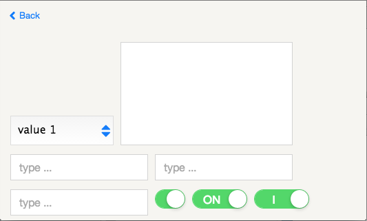
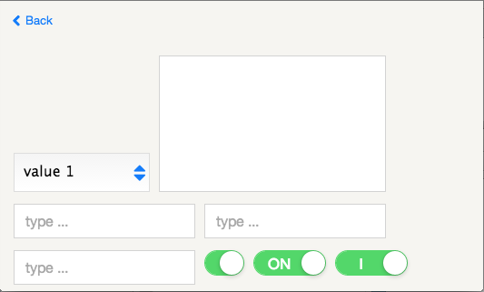

In dataflow programming, a program is represented as a graph:
nodes represent components of the program: a widget for instance
edges represent the path of data exchanged by components
A node (component) uses inputs (input properties of the component) to compute
the values of outputs (output properties of the component). Whenever input
values are modified, the component node computes and updates its output
properties.
If the value of the output properties changes as a result of the computation,
the new values are propagated to other nodes of the graph through the edges
that connect the output of the node to the input of other nodes.
Dataflow programming does not generate side effects and is easy to represent
visually.
To simplify algorithm analysis, we introduce a constraint for the dataflow
graph: only Directed Acyclic Graphs (DAG) are allowed.
Refer to the end of this specification for a discussion on limitations
related to this constraint and how to mitigate them.
Customizable
Create your own GUI Components and themes.
VSToolkit is provided with "Native like" or original themes.

 
